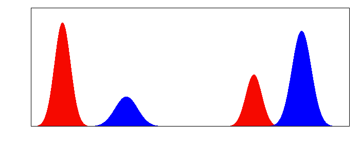

$\renewcommand{\Diff}{\mathcal{D}}\newcommand{\dist}{\mathrm{dist}}\renewcommand{\Imm}{\mathcal{I}}\newcommand{\Shape}{\mathcal{S}}\newcommand{\R}{\mathbb{R}}\newcommand{\vol}{\operatorname{vol}}\newcommand{\Vol}{\mathrm{Vol}}\newcommand{\Var}{V}$
<h4>FORMULATIONS OF THE WASSERSTEIN-FISHER-RAO DISTANCE<br>and their Implications</h4><hr> <p> <b>Emmanuel Hartman$^1$</b>, Eric Klassen$^1$, Martin Bauer$^1$ <br> <br>$^1$Department of Mathematics, Florida State University<br></p><hr><p> UF/FSU Geometry and Topology Meeting<br> 4 November 2023 </p>
<h4 align="left">Optimal Transport vs. Unbalanced Optimal Transport</h4><hr> <div class="row"> <div class="col-md-8" markdown="1" align="left"> <p>+The goal of optimal transport (OT) is to define a metric between measures on a metric space $(N, d_N)$ based on the energy required to move mass around the space $N$. </p> <p>+However, OT distances cannot compare two measures with different total masses because these models do not allow for the creation or destruction of mass. </p> <p>+Unbalanced optimal transport (UOT) metrics such as the Wasserstein-Fisher-Rao distance seek to ovecome this by allowing for the penalized creation and destruction of mass.</p> </div> </div> <div class="row" align="left"> <div class="col-md-6" markdown="1" align="left"> <p><sub>OT (Wasserstein)</sub></p><br> </div><div class="col-md-6" markdown="1" align="left" vertical-align="center"> <p><sub>UOT (Wasserstein-Fisher-Rao)</sub></p><br> </div> <p>We denote the space of Radon measures on $N$ by $\mathcal{M}(N)$ and the finitely supported measures on $N$ by $\mathcal{M}_0(N)$.</p> </div>
<h4 align="left">Wasserstein and Sinkhorn Distances For Discrete Measures</h4><hr> <div class="row"> <div class="col-md-12" markdown="1" align="left"> <p>Consider $\mu,\nu\in\mathcal{M}_0(N)$ with $\mu=\sum_{i=1}^m a_i \delta_{u_i}$ and $\nu=\sum_{j=1}^n b_j\delta_{v_j}$ </p> <div class="b" align="left"><div class="btitle"><h4>Definition</h4></div><p align="left"> A <em> discrete coupling</em> from $\mu$ to $\nu$ is an $m\times n$ matrix $G$ with non-negative entries satisfying \[a_i=\sum_{j=1}^nG_{ij}, \qquad b_j=\sum_{i=1}^mG_{ij}.\] <p>We denote the space of all discrete couplings by $\Gamma_0(\mu,\nu)$.</p> </div> <p>The <em>Wasserstein</em> distance from $\mu$ to $\nu$ can be written as \[\qquad\qquad\qquad\qquad\qquad\qquad W(\mu,\nu)^2=\inf\limits_{G\in \Gamma_0(\mu,\nu)}\sum\limits_{i=1}^m\sum\limits_{j=1}^nd_N(u_i,v_j)^2 G_{ij} \]</p> <p class="fragment fade-left">In [1], the Sinkhorn-Knopf algorithm was proposed to solve an entropy regularized version of this optimization given by \[\qquad\qquad\qquad\qquad\qquad\qquad\inf\limits_{G\in \Gamma_0(\mu,\nu)}\sum\limits_{i=1}^m\sum\limits_{j=1}^nd_N(u_i,v_j)^2 G_{ij} + \lambda H(G) \]</p></p> </div> <div class="row" align="left"> <p><sub>[1] Marco Cuturi. "Sinkhorn distances: Lightspeed computation of optimal transport." </sub></p> </div>
<h4 align="left">Optimal Entropy-Transport Formulation of the WFR</h4><hr> <div class="row"> <div class="col-md-12" markdown="1" align="left"> <p>Consider $\mu,\nu\in\mathcal{M}(N)$. The Wasserstein-Fisher-Rao distance from $\mu$ to $\nu$ may be formulated as</p> <p>\[\qquad\qquad\operatorname{WFR}(\mu,\nu)^2:= \inf\limits_{\gamma\in \mathcal{M}(N\times N)}\left(\int-\log(\overline{\cos}(d_N(x,y)))d\gamma(x,y) +\operatorname{KL}(\operatorname{Proj}_1 \gamma, \mu)+\operatorname{KL}(\operatorname{Proj}_2 \gamma, \nu) \right). \]</p> <p>where $\operatorname{KL}$ is the <em>Kullback-Leibler divergence</em> and $\overline{\cos}(\theta)=\cos(\min(\theta,\pi/2))$.</p> <p class="fragment fade-left">This formulation allows adaptation of the Sinkhorn-Knopf algorithm to solve an entropy regularized version of the problem given as \[\inf\limits_{\gamma\in \mathcal{M}(N\times N)}\left(\int-\log(\overline{\cos}(d_N(x,y)/2))d\gamma(x,y) +\operatorname{KL}(\operatorname{Proj}_1 \gamma, \mu)+\operatorname{KL}(\operatorname{Proj}_2 \gamma, \nu) \right) + \lambda H(G). \]</p> <p><sub>[2] Chizat et. al. "Scaling algorithms for unbalanced optimal transport problems"</sub></p> </div>
<h4 align="left">Kantorovich Formulation of the WFR</h4><hr> <div class="row" align="left"> <div class="col-md-12" markdown="1" align="left"> <p>Consider $\mu,\nu\in\mathcal{M}_0(N)$ with $\mu=\sum_{i=1}^m a_i \delta_{u_i}$ and $\nu=\sum_{j=1}^n b_j\delta_{v_j}$. </p> <div class="b" align="left"><div class="btitle"><h4>Definition [3]</h4></div><p align="left"> A <em> discrete semi-coupling</em> from $\mu$ to $\nu$ is is a pair of $(m+1)\times(n+1)$ matrices $(A,B)$ with non-negative entries satisfying<br> \[0 = \sum_{j=0}^nA_{0j},\quad a_i=\sum_{j=0}^nA_{ij}, \quad 0 = \sum_{i=0}^mB_{i0}, \quad b_j=\sum_{i=0}^mB_{ij}.\] <p>We denote the space of all discrete semi-couplings by $\overline{\Gamma}_0(\mu,\nu).$</p> </div> </div> <p><br>The <em>Wasserstein-Fisher-Rao</em> distance from $\mu$ to $\nu$ is given by \[\qquad\qquad\qquad\operatorname{WFR}(\mu,\nu)^2=\inf\limits_{(A,B) \in \overline{\Gamma}_0(\mu,\nu)} \left(\sum_{i=1}^m a_i +\sum_{j=1}^n b_j - 2 \sum_{i=1}^m\sum_{j=1}^n \sqrt{A_{ij}B_{ij}} \overline{\cos}(d_N(u_i,v_j))\right) \]</p> <p class="fragment fade-left">In [3], it was shown that there was a closed formula for the optimal $A$ given a fixed $B$ and vice versa.<br>Furthermore, the alternating application of these formulas converges to optimal $(A,B)\in \Gamma_0(\mu,\nu)$. </p> <p><sub>[3] Bauer, <b>H.</b>, Klassen "The Square Root Normal Field Distance and Unbalanced Optimal Transport"</sub></p> </div>
<h4 align="left">Diffeomorphic Optimization Formulation of the WFR</h4><hr> <div class="row"> <div class="col-md-12" align="left" markdown="1"> <p>Let $N$ be a smooth, connected, compact, oriented Riemannian manifold. Define the cone over $N$ via $\mathcal{C}(N):= (N\times \R^{\geq0})/(N\times\{0\})$. If we let $d_N$ denote the geodesic distance on $N$, then we can define a metric on $\mathcal{C}(N)$ via \[d_{\mathcal{C}(N)}((n_1,r_1),(n_2,r_2))^2=\left(r_1^2+r_2^2-2r_1r_2 \overline{\cos}(d_N(n_1,n_2))\right).\]</p><br> <p>Let $M$ be another smooth, connected, compact, oriented Riemannian manifold.</p> <p>A function $q:M\to \mathcal{C}(N)$ can be decomposed as $q(x)=(\overline{q}(x),\hat{q}(x))$ where $\overline{q}:M\to N$ and $\hat{q}:M\to \R^{\geq0}$.</p> <div class="b" align="left"><div class="btitle"><h4>Definition </h4></div> <p class="fragment fade-left">The space of $L^2$-functions from $M$ to $\mathcal{C}(N)$ is defined as \[\qquad\qquad\qquad\qquad\qquad\qquad L^2(M,\mathcal{C}(N)):=\{q:M\to \mathcal{C}(N) \text{ s.t. } \int_M \hat{q}(m)^2 dm<\infty\}.\] </p> <p class="fragment fade-left">We equip this space with the $L^2$ metric which can be written as \[\qquad\qquad\qquad d_{L^2}(q_1,q_2)^2=\left(\int_M \hat{q_1}(x)^2 dm +\int_M \hat{q_2}(x)^2 dm -2\int_M \hat{q_1}(x)\hat{q_2}(x)\overline{\cos}(d(\overline{q_1}(x),\overline{q_2}(x)))dm\right).\]</p> </div> </div> </div>
<h4 align="left">Two Quick Definitions</h4><hr> <div class="row"> <div class="col-md-12" align="left" markdown="1"> <div class="b" align="left"><div class="btitle"><h4>Definition [4]</h4></div> <p>Let $q\in L^2(M,\mathcal{C}(N))$. We can define a Radon measure $\mu_q$ on $N$ where for all $U\subseteq N$ open \[\mu_q(U)=\int_{\overline{q}^{-1}(U)} \hat{q}(x)^2dm.\]</p><br> <p>Thus, we can define a map $\Psi:L^2(M,\mathcal{C}(N)) \to \mathcal{M}(N)$ given by $\Psi(q):=\mu_q $.</p> <br></div> <br> <div class="b" align="left"><div class="btitle"><h4>Definition [4]</h4></div> <p>We define the right action of the diffeomorphisms of $M$ on $L^2(M,\mathcal{C}(N))$ component-wise by</p> <p>\begin{align*}L^2(M,\mathcal{C}(N))\times\Diff(M)&\to L^2(M,\mathcal{C}(N)) \text{ via }\\ (\overline{q},\hat{q}),\gamma&\mapsto q*\gamma:=\left(\overline{q}\circ \gamma,\hat{q}\circ\gamma \cdot \sqrt{|D\gamma|}\right).\end{align*}</p> <br></div> <hr><p><sub>[4] <b>H.</b>, Bauer, Klassen "Square Root Normal Fields for Lipschitz surfaces and the Wasserstein Fisher Rao metric"</sub></p> </div> </div>
<h4 align="left">Final Formulation and Implication</h4><hr> <div class="col-md-12" markdown="1" align="left"> <!--<div class="b" align="left"><div class="btitle"><h4>Theorem (<b>H.</b>, Bauer, Klassen [2023])</h4></div><p align="left"> Let $N$ be a smooth connected compact Riemannian manifold and $M$ be a smooth connected compact Riemannian manifold of dimension $\geq2$.<br> The quotient space $L^2(M,\mathcal{C}(N))/\Diff(M)$ equipped with the metric $d$ is isometric to $\mathcal{M}(N)$ equipped with the $\operatorname{WFR}$ distance.<br>Moreover, we may define this isometry explicitly and show that it is surjective. </div>--> <div class="b" align="left"><div class="btitle"><h4>Theorem (<b>H.</b>, Bauer, Klassen [2023])</h4></div><p align="left"> Let $N$ be a smooth connected compact Riemannian manifold and $M$ be a smooth connected compact Riemannian manifold of dimension $\geq2$. <p>a.) The map $\Psi:L^2(M,\mathcal{C}(N)) \to \mathcal{M}(N)$ is surjective.</p> <p>b.) For all $q_1,q_2\in L^2(M,\mathcal{C}(N))$ with $\mu_1=\Psi(q_1)$ and $\mu_2=\Psi(q_2)$ we have \begin{align*}\operatorname{WFR}(\mu_1,\mu_2)= \inf\limits_{\gamma\in\Diff(M)}d_{L^2}(q_1,q_2*\gamma).\end{align*}</p></div> </div> <div class="row"> <div class="col-md-6" markdown="1" align="left"> <br> <p class="fragment fade-left">+ It is notable that $M$ does not depend on $N$.</p><br> <p class="fragment fade-left">+ We can define an explicit right inverse of $\Psi$ on $\mathcal{M}_0(N)$. </p><br> <p class="fragment fade-left">+ Thus the WFR on $\mathcal{M}(N)$ may be computed by optimizing over the diffeomorphisms of any 2-manifold $M$. </p><br> <br> </div><div class="col-md-6" markdown="1" align="left"> <br> <p>This talk is based on:<br><a href="https://arxiv.org/pdf/2105.06510.pdf">https://arxiv.org/pdf/2105.06510.pdf</a><br> and <br><a href="https://arxiv.org/pdf/2301.00284.pdf">https://arxiv.org/pdf/2301.00284.pdf</a><br> These slides are available at:<br><a href="https://www.math.fsu.edu/~ehartman/Slides/WFR_Flash/talk.html">www.math.fsu.edu/~ehartman/Slides/WFR_Flash/talk.html</a></p> </div>